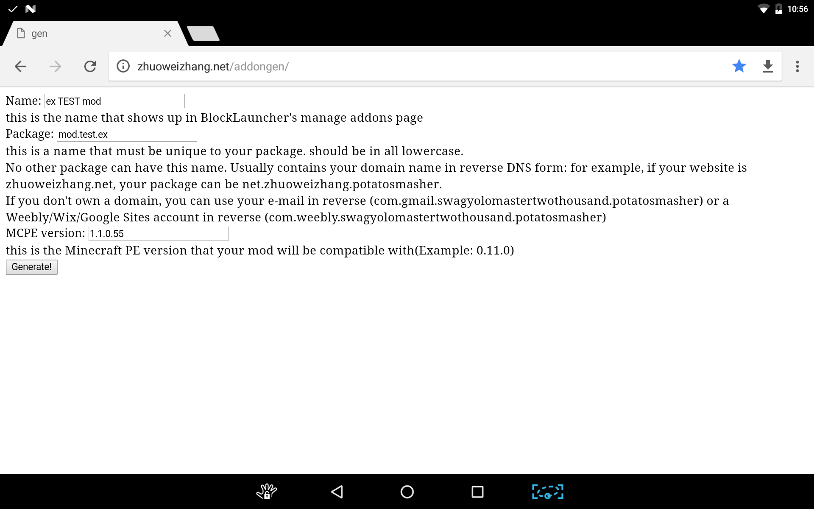

native modとは、JavaScriptで作られたmod（以外script mod）と違いmcpeを直接操作できるmodです。
native modではMCPEで使われているものと同じC言語もしくはC++で記述します。
ここではAndroidでの開発を想定して紹介します。
必要な物
まず、雛形を作るページにアクセスします。http://zhuoweizhang.net/addongen/ 次に、Nameにmod名を、Packageにパッケージ名、MCPE versionに対象とするMCPEのバージョンをそれぞれ記入します。 このとき、mod名は半角記号と半角英数字、パッケージ名は.と半角英数字、対象とするMCPEのバージョンは.と半角数字を用いて記入します。（以下例）

すべての記入が済んだらGenerate!のボタンを押し、雛形をダウンロードします。 その後、ダウンロードしたzipファイルを解凍すれば雛形の完成です。ただ、ミスがあると後々面倒になるのでAIDEで一度コンパイルをして、インストール画面まで進むかだけは確認しておいたほうがいいでしょう。雛形が完成したら次は本題のmodの作成です。